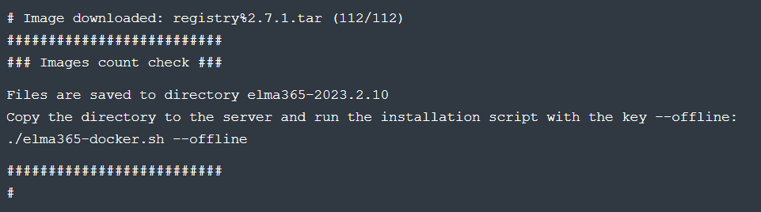
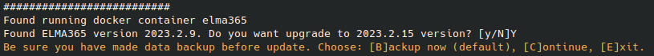
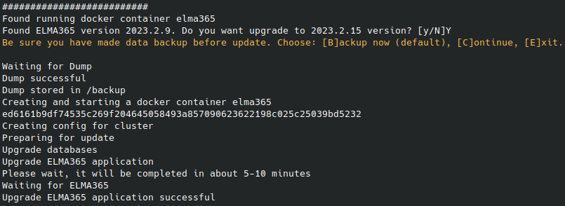

The update process for BRIX Standard (KinD) is simple and is carried out similarly to the installation process.
Update order
To ensure data integrity when migrating with a version change of the BRIX edition, it is recommended to update each major version without skipping any. For instance, version 2025.2.1 can be updated to 2025.3.1.
If you need to update your chart for more than one version, install each major version until you reach the latest chart.
Important: in each version, install the latest minor release.
начало примера
Examples
- Installed chart version 2025.3.2, current (latest) chart version 2025.4.1. The update is done in one step: directly to 2025.4.1.
- Installed chart version 2025.1.29, current (latest) chart version 2025.4.1. The update is done in three steps: 2025.1.29 > 2025.2.16 > 2025.3.2 > 2025.4.1.
- Installed chart version 2024.11.46, current (latest) chart version 2025.4.1. The update is done in four steps: 2024.11.46 > 2025.1.32 > 2025.2.16 > 2025.3.2 > 2025.4.1.
конец примера
Please note that your current version in an LTS version, you can update directly to the next LTS version according to the release life cycle schedule.
To see the list of all BRIX versions, use the following command:
helm repo add elma365 https://charts.elma365.tech
helm repo update
helm search repo elma365/elma365 --versions
Procedure for online installation:
- Download the installation script for the current (latest) version.
- Copy the configuration file from the currently installed version.
- Run the installation script with the
--upgradekey.
For more details on online installation, refer to Install BRIX Standard.
Procedure for offline installation without internet access:
- On a computer with internet access, download the files for the current (latest) offline version and copy the downloaded files to a computer in a closed circuit.
- Copy the configuration file from the currently installed version.
- Run the installation script with the keys
--offline --upgrade.
For more information on installation without internet access, read the article Install BRIX Standard offline.
Step 1: Download installation script
For online installation:
Download the installation script for the current version of BRIX Standard (KinD) into a separate directory:
sudo curl -fsSL -o elma365-docker.sh https://dl.elma365.com/onPremise/latest/elma365-docker-latest && \
sudo chmod +x elma365-docker.sh && \
sudo ./elma365-docker.sh
For offline installation without internet access:
sudo curl -fsSL -o elma365-docker-offline.sh https://dl.elma365.com/onPremise/latest/elma365-docker-offline-latest && \
Example of executing the boot script: 
|
Download links for other BRIX versions are provided in Links for downloading BRIX distribution packages.
Step 2: Copy the configuration file
Copy the configuration file config-elma365.txt from the directory of the current installation to the directory with the latest version of the installation script elma365-docker.sh.
The installation script will utilize the existing settings from the configuration file config-elma365.txt.
начало внимание
If the configuration file is missing, the script will retrieve the current parameters from the running container and create a configuration file with these parameters.
конец внимание
Step 3: Run the Installation Script to Update BRIX Standard (KinD)
- Update the BRIX Standard (KinD) app using the
elma365-docker.shinstallation script, launched with the--upgradekey.
For online installation:
sudo ./elma365-docker.sh --upgrade
For offline installation without internet access:
sudo ./elma365-docker.sh--offline --upgrade
After starting, the installation script will identify the version of the installed BRIX Standard (KinD) and suggest moving to a new version.
When updating, the current (latest) version of BRIX Standard (KinD) must be higher than the version being updated (current).
- Agree to move to the new version by typing the symbol [Y]. Entering any other symbol will interrupt the app update.

- Next, you'll see a notification indicating that you need to make a backup before updating BRIX Standard (KinD).
To continue updating the app, enter one of the options:
[B]. Create a backup (Backup);[C]. Skip creating a backup (Continue);[E]. Interrupt the app update (Exit).
- Create a backup and continue updating BRIX Standard (KinD) by choosing
[B]or pressing the ENTER key.
The installation script will execute the backup and proceed with the app update.

- Wait for the app update to complete. You’ll see the message “Upgrade BRIX application successful.”
The update of BRIX Standard (KinD) settings is finished.
Found a typo? Select it and press Ctrl+Enter to send us feedback